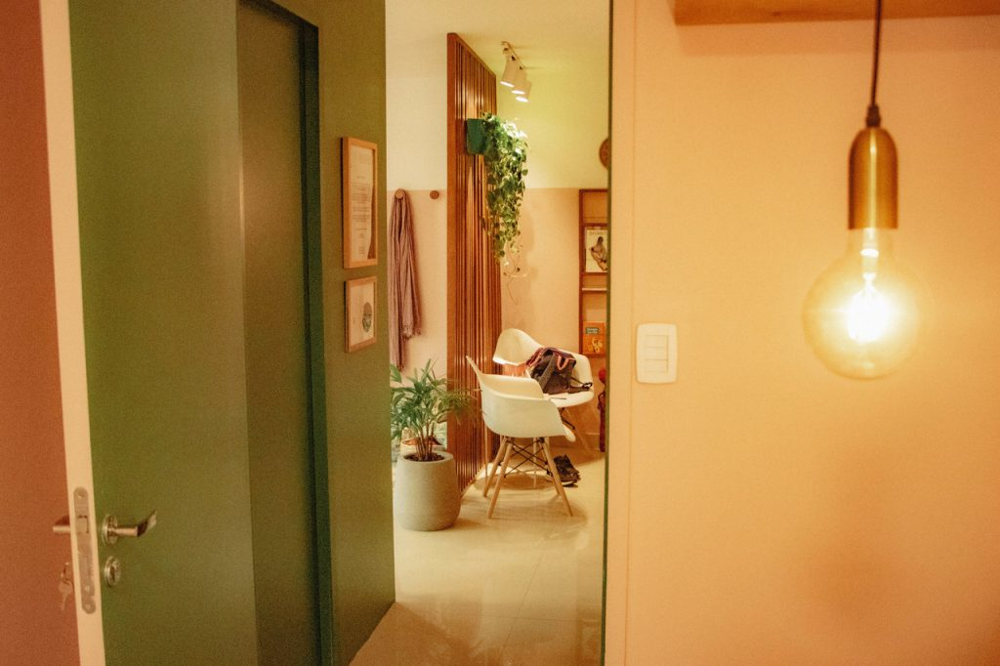

Acolhimento, cuidado e fisioterapia especializada em cada fase da mulher
A Fisio Obstare oferece um espaço especializado em fisioterapia pélvica e obstétrica. Cuidados contínuos da gestação ao pós-parto para proporcionar saúde, prevenção e qualidade de vida no seu ciclo feminino.

Serviços e Acompanhamento Especializado
Conheça nossas abordagens para a preparação ao parto, saúde pélvica, reabilitação e bem-estar integral.

Avaliação e reabilitação dos músculos do assoalho pélvico
A gestação e as fases do ciclo feminino trazem transformações no suporte pélvico. A avaliação criteriosa e os exercícios orientados de forma personalizada ajudam na prevenção e tratamento de desconfortos e dores pélvicas.
Saber mais
Programa de exercícios para gestantes e pós-parto
Exercícios orientados desde o início da gravidez até o final, prevenindo alterações posturais e preparando a musculatura pélvica independente da via de parto.

Acupuntura e Drenagem Linfática
Técnicas terapêuticas para alívio de retenção de líquidos, tensões musculares, dores e melhora da circulação no período gestacional e geral.
Abordagem Integrativa (Reiki e Florais)
Cuidado holístico que alia terapias integrativas como Reiki e Florais de Bach para equilíbrio emocional e bem-estar em momentos de transformação.
Acompanhamento de Parto e Workshops
Oficinas educativas e suporte no acompanhamento do trabalho de parto, proporcionando segurança, autonomia e informação para a gestante e acompanhante.
Conheça a Fisio Obstare
A Fisio Obstare surgiu da união de três fisioterapeutas com o propósito de acolher e cuidar. Estamos prontas para realizar um atendimento de qualidade e individualizado.
Somos um espaço de fisioterapia especializado em saúde da mulher, em todas as fases do seu ciclo, com foco em assoalho pélvico e movimento, inclusive a obstetrícia. Oferecemos assistência e cuidado contínuo da gestação ao pós-parto, trazendo resultados positivos neste período tão importante do ciclo feminino.
Toda a alegria, segurança, acolhimento e realização que vivenciamos em nossos processos pessoais nos uniu para fazer da FISIO OBSTARE um local de apoio e qualidade de vida.
Falar com a Equipe
Conheça Nosso Corpo Clínico
Profissionais dedicadas ao cuidado contínuo e acolhedor na saúde da mulher.
Fernanda Lebeis
FisioterapeutaGraduada em fisioterapia desde 2005 pela UFRJ. Início da atuação em Neurologia e Ortopedia e posteriormente Terapia Intensiva, dedicada ao cuidado especializado do assoalho pélvico e gestação.
Nathalia Moura
Fisioterapeuta PélvicaPós-graduada em fisioterapia pélvica desde 2012, mestre em ciências da reabilitação e acupunturista em saúde da mulher. Atua com obstetrícia desde 2015.
Carla Carvalho
FisioterapeutaGraduada em Fisioterapia desde 2005, iniciou sua atuação profissional atendendo nas áreas de hidrocinesioterapia, traumato-ortopedia e neurologia, com foco no cuidado da mulher.

Como a Fisioterapia Pélvica pode te auxiliar?
A fisioterapia pélvica é recomendada em diferentes momentos da vida da mulher. Veja se você se identifica com alguma dessas situações:
Um especialista da nossa equipe pode avaliar seu caso de forma individualizada.
Conversar com FisioterapeutaDepoimentos de Nossas Pacientes
Confira o carinho e o relato de quem passou pelo acompanhamento na Fisio Obstare.
"A Natália é simplesmente maravilhosa como pessoa e profissional!!! Sempre dedicada e comprometida, me deixou mto segura e confiante para tentar o parto normal . Já sinto saudade das minhas rotinas na Fisio !"
"Excelente profissional. Ela fez toda a diferença na minha preparação ao parto…sem dúvida foi a melhor escolha!! Gratidão"
"simplesmente maravilhosa! profissional muito competente, atenciosa, espaço acolhedor. com certeza as sessões de exercícios contribuíram pro meu parto ter sido muito rápido."
"Para quem busca profissionalismo, segurança e acolhimento, a Nathalia Moura é a escolha ideal de fisioterapeuta. Desde o primeiro contato até o fim do acompanhamento ela nos encantou com a sua competência, simpatia e cuidado com que trata as pacientes. Recomendo muito!"
"Conheci a Nath através da minha enfermeira obstétrica, e fiz todo meu acompanhamento pré-Natal com ela. Foi uma experiência maravilhosa, tive uma preparação perfeita para meu parto, que pude realizar com confiança e segurança."
"Excelente profissional!"
"Ela é maravilhosa profissionalmente e como pessoa! Foi muito importante e os ensinamentos dela fez toda diferença no meu parto."
"A Nathalia é uma pessoa maravilhosa. O trabalho dela é ótimo e me ajudou muito para o parto e agora no pós -parto também. Super indico!"
"Atenciosa, cuidadosa com cada detalhe, os exercícios que aprendi com a Nathalia faço até hoje e me ajudaram muito no pós parto."
"Excelente fisioterapeuta pélvica! Muito competente, atualizada e atenciosa."
Agende a Sua Consulta na Fisio Obstare
Estamos prontas para te receber na Barra da Tijuca/RJ com um atendimento individualizado, focado na sua saúde, bem-estar e preparação no ciclo feminino.
Agende sua Consulta via WhatsApp